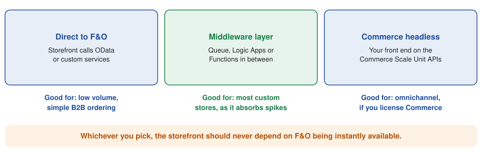
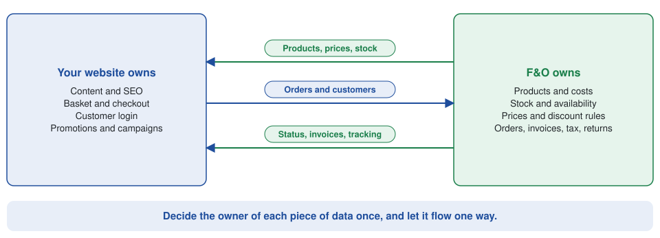
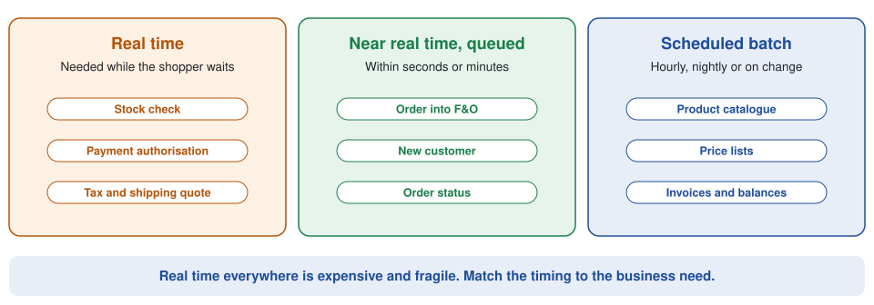

Integrating Your E-Commerce Website with Dynamics 365 F&O, Part 1: Architecture and Design Decisions
Selling online from your own website, while Dynamics 365 Finance and Operations runs stock, pricing, orders and the ledger, sounds like a simple connection. In practice it is one of the most design-sensitive integrations an ERP team will build, because a shopper is waiting on the other end. This is Part 1 of a two-part series on the architecture and the decisions to settle first. Part 2 covers building, testing and running it.

1. Start with the business flows, not the technology
List what must move between the website and the ERP, and in which direction:
- Product catalogue: items, descriptions, attributes and images.
- Prices and discounts, including customer-specific and trade-agreement pricing for B2B.
- Stock availability shown to the shopper.
- Customers: new accounts, addresses and credit terms.
- Orders from checkout into F&O.
- Fulfilment status, tracking and invoices back to the shopper.
- Payments, refunds and returns.
Each of those is a separate integration with its own volume, timing and failure behaviour. Treating “the e-commerce integration” as one thing is the first mistake.
2. Decide who owns each piece of data
As with any integration between business systems, name one owner for every entity. A typical split is that the website owns content, basket, checkout and login, while F&O owns products and costs, stock, price rules, orders, invoices, tax and returns. Data flows one way for each item, so nobody edits the same field in two places.

3. Choose the integration pattern
Direct calls to F&O
The website calls F&O’s OData data entities or custom services straight from its back end. It is the least to build and suits low volumes, internal portals or B2B ordering by known customers. The weakness is coupling: if F&O is busy, being updated or throttling requests, the storefront feels it.
A middleware layer
A queue and integration layer sits between the two, for example Azure Service Bus with Logic Apps or Azure Functions. Orders are accepted and stored in your own queue first, then delivered to F&O at a pace F&O can accept, with retries and an error queue. For a custom-built store this is usually the right answer, because it protects the shopper experience from anything that happens inside the ERP.
Dynamics 365 Commerce headless
If you license Dynamics 365 Commerce, Microsoft describes a headless approach in which you build your own front end on the Commerce Scale Unit (CSU) and its Retail Server APIs. Microsoft’s guidance covers products and prices, real-time inventory queries, customers, order creation and payment integration, and there is a public set of headless integration samples. You gain a supported commerce engine and a path to point of sale and other channels; you take on Commerce licensing and its way of modelling channels, catalogues and pricing. It deserves a proper comparison if you expect to sell through more than one channel.
Whichever you choose, one rule holds: the storefront should never depend on F&O being instantly available.
4. Match the timing to the need
Not everything needs to be real time, and real time everywhere is expensive and fragile. A sensible grouping:

- Real time only where the shopper is waiting: stock check, payment authorisation, tax and shipping quote.
- Queued, within seconds or minutes: the order itself, new customers, status updates.
- Scheduled batch: catalogue, price lists, invoices and balances. Publish only what changed rather than the whole catalogue every time.
5. Stock availability needs its own answer
Showing “in stock” honestly is harder than it looks. Querying on-hand quantity from F&O for every page view will not scale and will not tell you what is already committed to other orders. Microsoft’s Inventory Visibility add-in for Supply Chain Management is designed for this: it runs as a separate service, exposes REST APIs, tracks inventory across data sources and channels, supports soft reservations to reduce overselling, and calculates available-to-promise quantities. If you do not use it, build a cached availability feed with a clear refresh rule and a safety buffer, and decide in advance what the site does when the cache and reality disagree.
6. Security from day one
- Register the integration as an application in Microsoft Entra ID and use OAuth with a dedicated service identity, not a shared user account.
- Give it only the F&O security roles it needs, and keep secrets in Azure Key Vault rather than in code or configuration.
- Never let the browser call F&O directly. All calls go through your back end or integration layer.
- Log what each call did, with the order reference, so finance and audit can trace it.
7. Environments and change
You will need a test storefront talking to a non-production F&O environment with realistic data, and a clear process for promoting changes on both sides. F&O is updated regularly, so keep the integration’s contract with F&O narrow, test it against each update before it reaches production, and keep the integration code in source control with automated deployment, as you would any other product.
8. The Irish and EU angle
- VAT: decide where VAT is calculated and make sure the store and F&O agree on rates and rounding. If you sell to consumers in other EU countries, the EU One Stop Shop (OSS) scheme may apply, so confirm the treatment with your tax adviser before you design tax handling.
- GDPR: limit the personal data you pass into F&O to what fulfilment and accounting need, and agree retention and deletion rules.
- E-invoicing: Ireland has announced a phased move to structured e-invoicing and real-time reporting from November 2028. Keep invoicing and tax logic in F&O and out of the storefront so it can be adapted once, in one place.
Questions to answer before you build
- Which system owns each piece of data, and in which direction does it flow?
- Do you need B2C only, or B2B with customer-specific prices and credit limits?
- How many orders per hour at peak, and what happens during a sale?
- How will you show honest stock availability?
- Will you add other channels, such as a shop or marketplace, within two years?
Continue with Part 2: building, testing and running the integration.
Frequently asked questions
Can an e-commerce website connect directly to Dynamics 365 Finance and Operations?
Yes, through OData data entities or custom services, secured with Microsoft Entra ID. It suits low volumes. For a public store, a queue-based middleware layer is safer because it keeps the shopper experience independent of the ERP.
Do I need Dynamics 365 Commerce to sell online from F&O?
No. Commerce is Microsoft’s commerce product, and its headless approach lets you build your own front end on it. You can also build a custom integration between your own store and F&O. The right choice depends on channels, licensing and how much commerce functionality you want to buy rather than build.
How do I show accurate stock on the website?
Do not query on-hand stock on every page view. Use the Inventory Visibility add-in for available-to-promise, or a cached availability feed with a refresh rule and safety buffer.
Should orders go into F&O in real time?
Near real time, yes, but through a queue. Accept and store the order first, then deliver it to F&O with retries, so a slow or busy ERP never loses or blocks a sale.
Can you help design an e-commerce integration with F&O?
Yes. I work remotely with organisations across Ireland on integration architecture for Dynamics 365.
Planning an e-commerce integration with Dynamics 365 Finance and Operations?
I provide independent architecture for Dynamics 365 Finance and Operations, drawing on more than 30 years’ experience across ERP, software engineering, data and enterprise systems. I can help you choose the pattern, review a partner’s design, or rescue an integration that is struggling. Contact me at declan@feelyconsultants.com or on LinkedIn.
Feely Software Consultants · Ireland | Remote Dynamics 365 Consulting
More articles
- Integrating Your E-Commerce Website with Dynamics 365 F&O, Part 2: Build, Test and Run
- Connecting Dynamics 365 CRM and Business Central: An Integration Guide
- Dynamics AX 2012 to Dynamics 365 Finance and Operations: How to Plan the Move
- ERP Data Migration: A Practical Approach That Holds Up at Go-Live